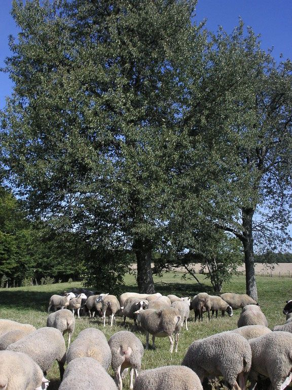

L'Organisme de sélection
Le « parlement » de la race ovine Romane
Véritable parlement de la race ovine, dans lequel se regroupent tous les acteurs d'une filière raciale, l'OS Romane est organisé sous forme de coopérative.
Cette coopérative est gérée par un conseil d'administration composé d'éleveurs sélectionneurs de la race Romane.
L'OS Romane définit, pour une race donnée, ses caractéristiques, certifie l'appartenance d'un animal à cette race, définit les orientations de sélection et le programme qui en découle.
Elle a en charge la tenue du Fichier Racial (généalogies, caractéristiques des ovins…) et délivre les documents officiels des reproducteurs ovins.
Elle assure aussi la promotion de la race et de son programme, en France comme à l'étranger.

Ses rôles
L'OS Romane est l'organisme de sélection officiel de la race, agréé par le ministère de l'Agriculture. Son rôle est essentiel à la vie de la race et ses responsabilités sont nombreuses :
- Il définit les objectifs de sélection, les caractères sélectionnés et leur pondération.
- Il tient le livre généalogique de la race et s'assure de la bonne variabilité génétique (consanguinité).
- Il est responsable du bon enregistrement des données de généalogie des animaux, de l'édition des certificats zootechniques et du contrôle de performance (délégué à des opérateurs locaux).
- Le calcul et la publication des index sont faits sous sa responsabilité.
- Il assure toute l'animation de la vie de la race, au travers des salons et de différents rassemblements.
En plus de ces rôles officiels, l'OS Romane assure la commercialisation des reproducteurs mâles et femelles issus des élevages adhérents.
Ses services
L'équipe de l'OS est à la disposition des éleveurs adhérents ou des nouveaux éleveurs sur différents sujets :
Conseils techniques
Conseils en génétique
Démarches sanitaires de la filière
Plan Visna Maedi…
Commercialisation des reproducteurs
Insémination
Adhérer à l'OS Romane
Adhérer se fait au travers de la souscription de capital social. Vous accédez ainsi à tous les services de l'OS, à des débouchés commerciaux, ainsi qu'à des tarifs préférentiels pour l'insémination et l'achat de béliers.
Nous contacter pour adhérer